From Surgipelago, the Beach Surgery encyclopedia
Concept art and illustrations
This page collects genuine artworks made for and about the novel by named artists. For the franchise's adaptations, see Beach Surgery (disambiguation).
This page gathers concept art and illustrations created for and in response to the novel by a range of artists. Several predate the franchise entirely — they are the images the wider phenomenon grew out of. Each work is credited to its artist.
The novel's own published illustrations are by Kim Jung Gi (cover) and Kate Nastas (end illustration).
The novel
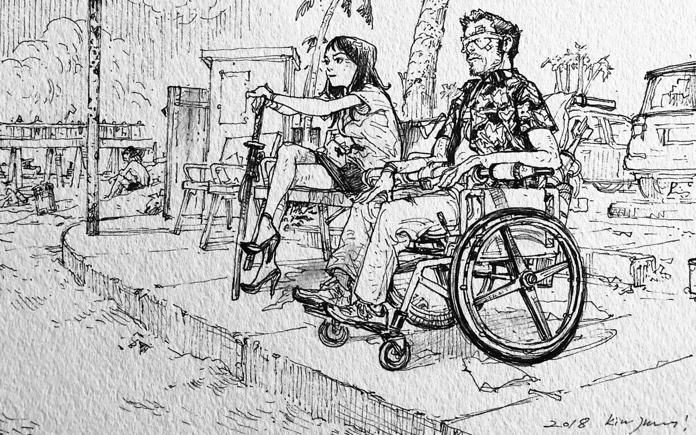
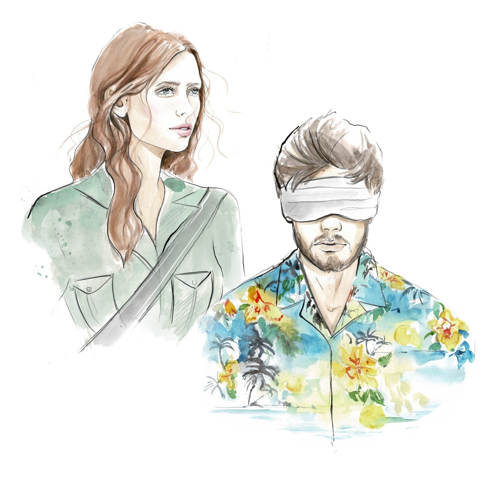
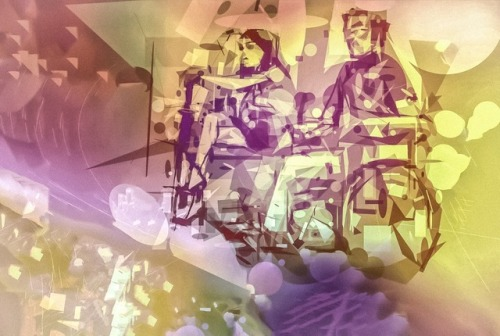
Katita and Leif
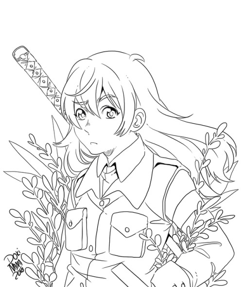
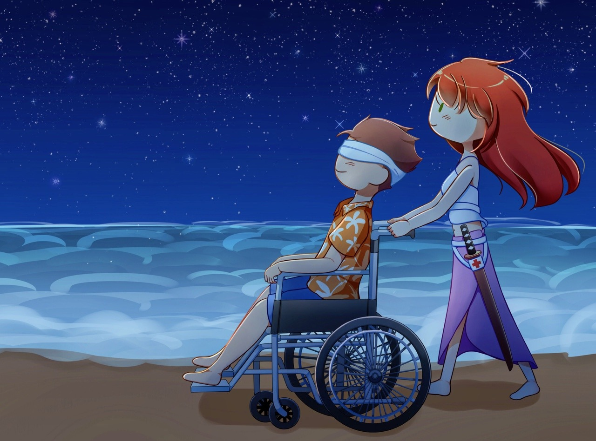
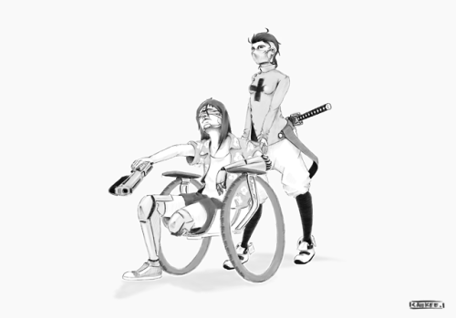
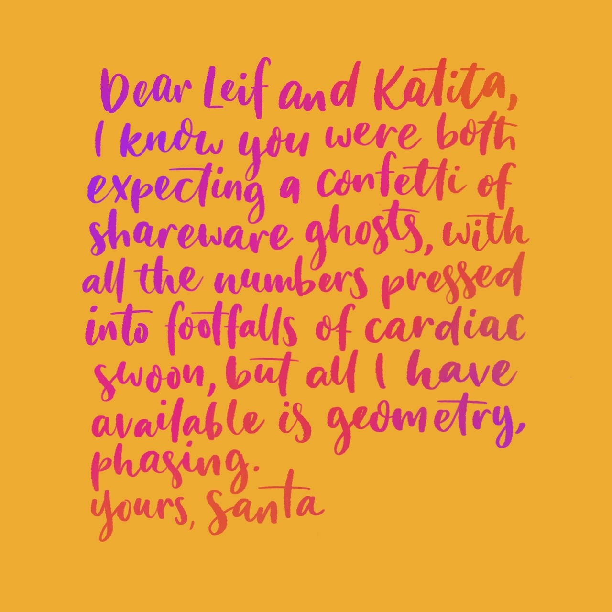
Adaptations and styles
Artist interpretations in the idioms of the manga, video games, and street art.

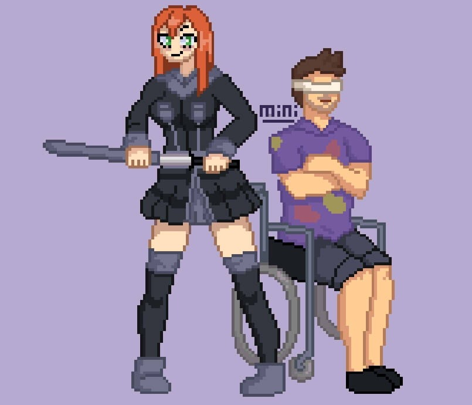
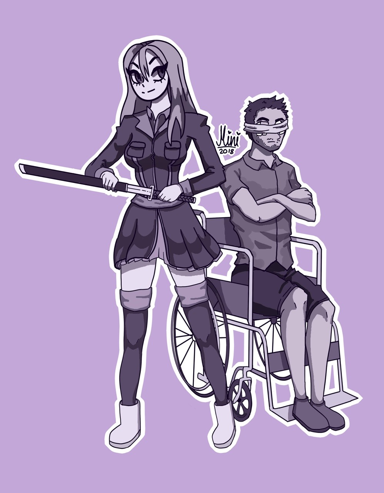
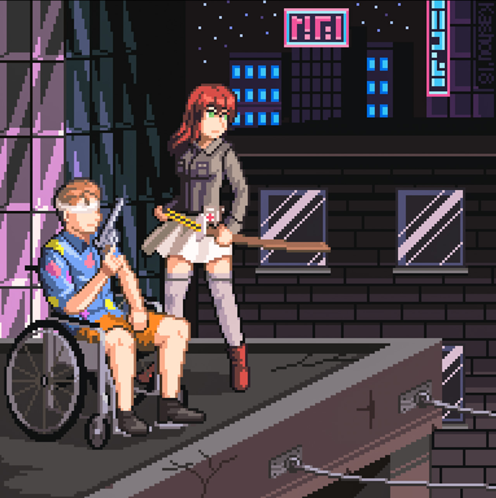
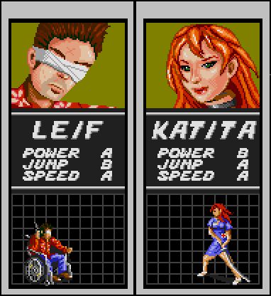
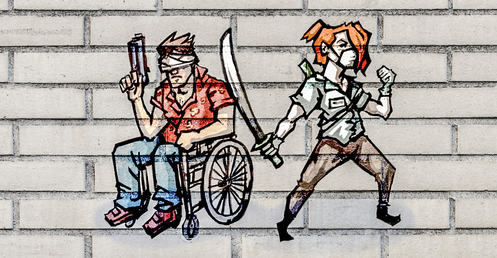